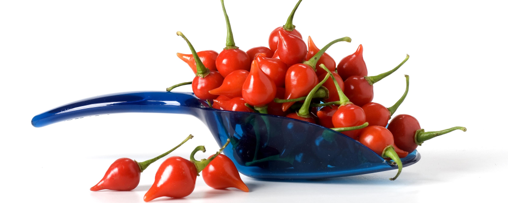

Sobre a pimenta
A pimenta biquinho é uma variedade brasileira da família das Capsicum chinese, e seu teor de ardência na Escala de Scoville, usada para mostrar quais são as pimentas mais picantes, é zero.
Também chamada pimenta de bico, ela pertence à mesma espécie das pimentas habanero, de-cheiro, bode, cumari-do-Pará e murupi. Todas essas pimentas são muito aromáticas e saborosas, mas o ardor pode ser bem suave (leve), como na biquinho ou muito picante (intenso) como na habanero.

Beneficios da Pimenta Biquinho
Além de seu sabor agradável, que faz com que ela seja usada em pratos doces e salgados, e até em drinks, a pimenta biquinho traz diversos benefícios para a saúde. Ela possui vitaminas C, B6 e K1, e é rica em cálcio, ferro, magnésio, fósforo e sódio, além do betacaroteno. Com essas propriedades, a pimenta-de-cheiro é considerada um bom antioxidante, ajuda o sistema imunológico, ajuda a controlar o açúcar no sangue, a prevenir inflamações e a diminuir dores musculares. A pimenta biquinho pode ser plantada em vasos, em jardins, em estufas e em plantações profissionais. Conheça algumas das características do plantio para que a pimenteira tenha boa produtividade.
Preparo e características do Solo para a Pimenta BiquinhoA terra para a pimenta biquinho deve ser rica em matéria orgânica, portanto, a dica é misturar uma parte de terra com uma parte de composto orgânico para plantá-la. Os cultivos em áreas pequenas e hortas domésticas também podem se beneficiar de um toque de areia; nesses casos, o ideal são duas partes de terra, duas de composto orgânico e uma parte de areia.

Plantio da Pimenta Biquinho
Para o plantio em locais abertos, o ideal é um espaçamento de 0,8 metro a 1 metro entre as linhas, e de 0,5 metro a 0,6 metro entre as plantas. Para cultivo em estufas e outros ambientes protegidos, é importante manter duas linhas de plantio com espaçamento de 0,6 metro entre linhas e 0,5 metro entre plantas. O plantio também pode ser realizado em jardins ou em vasos e, nesses casos, o ideal são vasos de pelo menos 5 litros, pois quanto maior o vaso, maior será o desenvolvimento e a frutificação. Já a pimenta biquinho plantada em canteiros, pode ultrapassar 1 metro de altura. Outra dica importante é preferir lugares com pleno sol, mas, caso isso não seja possível, a planta pode ser cultivada a meia sombra. É preciso ficar atento ao surgimento de pragas relacionadas à umidade, como os ácaros.

Regras e Iluminação
Uma das principais dicas sobre como plantar pimenta biquinho é sobre a irrigação. Independentemente do recipiente que esteja sendo cultivada, as regas devem ser frequentes, mas sem encharcar o cultivo, que pode levar ao apodrecimento das raízes.O período mais indicado para irrigação é no início da manhã ou no final da tarde. As pimentas gostam do clima tropical e subtropical, portanto, o local deve apresentar, no mínimo, de 18ºC a 34ºC. Em regiões mais frias, a germinação pode demorar um pouco mais, já que a pimenta biquinho ama o calor. Quanto mais sol, melhor!